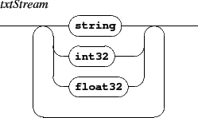
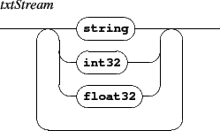

Segments are expressed as a list of intervals. For a 1 dimension resource, a segment is a made of a single interval. For a 2 dimensions resource, a segment is a made of 2 intervals: an interval on the  -axis and one on the -axis for graphic based resource, or an interval on columns and one on lines for text based resources. Intervals are right-opened.
-axis and one on the -axis for graphic based resource, or an interval on columns and one on lines for text based resources. Intervals are right-opened.
The different kind of relations corresponds to:
The specified map can be named with an optional mapName string; this name can be further reused, during object synchronization, to specify the mapping to use. When mapName is not specified, the mapping has a default empty name.
The del command deletes the mapping specified with mapName, or the 'empty name' mapping if no map name is specified.
| component type | segmentation type |
| txt, txtf | int2DSegments |
| img | int2DSegments |
| rect, ellipse, polygon, curve | float2DSegments |
| graph | int1DSegments |
Note for html, htmlf + guido score mappings


Relative time is expressed as rational values where  represents a whole note.
represents a whole note.

The mapf messages is similar to the map message but gives the path name of a file containing the mapping data, along with the optional map name.

![\begin{rail}
mapMsg : 'map' ( \vert mapName ) (
([1] float2DSegment relativeTim...
...) +
\vert ([3] int1DSegment relativeTimeSegment ) +
\vert ( del )
)
\end{rail}](img40.gif)